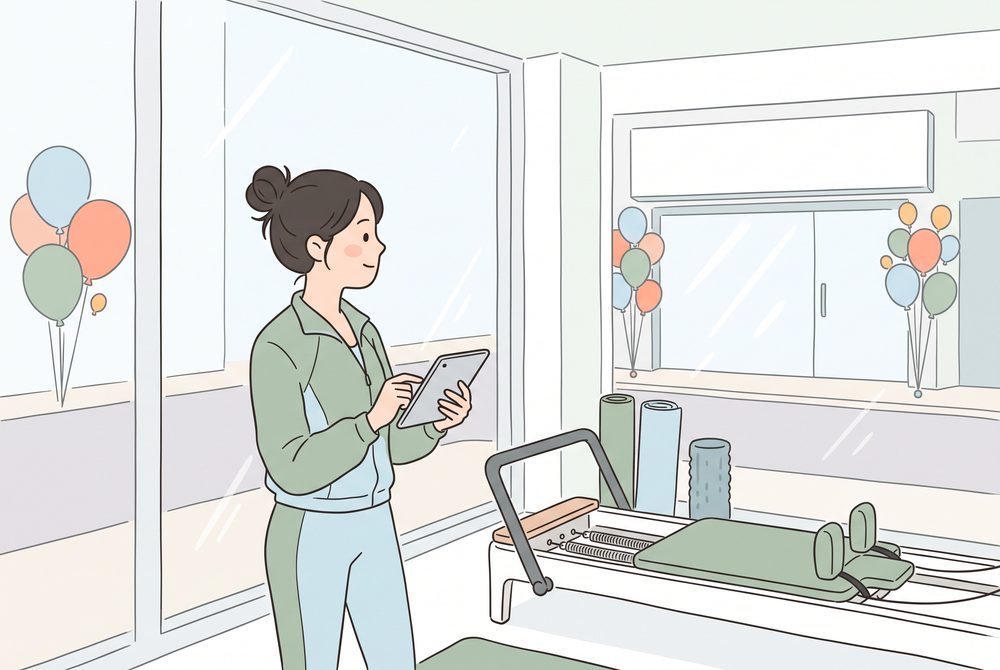
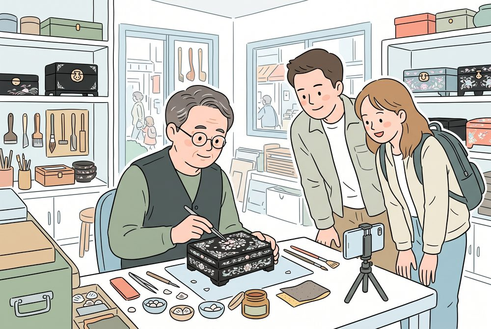
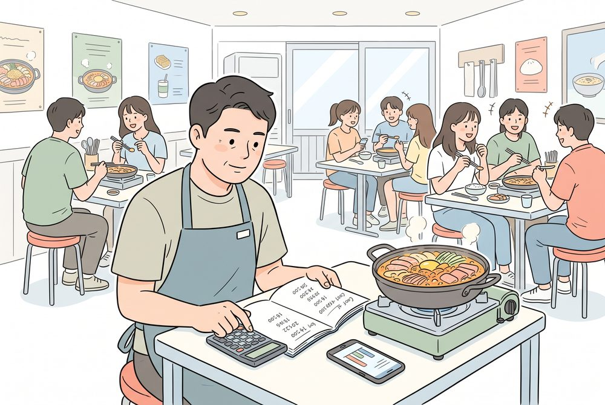
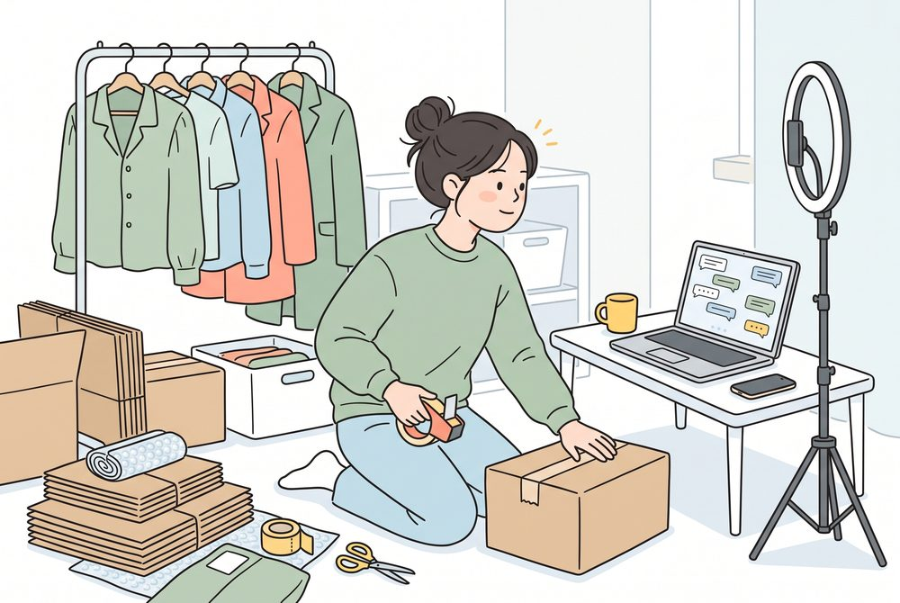
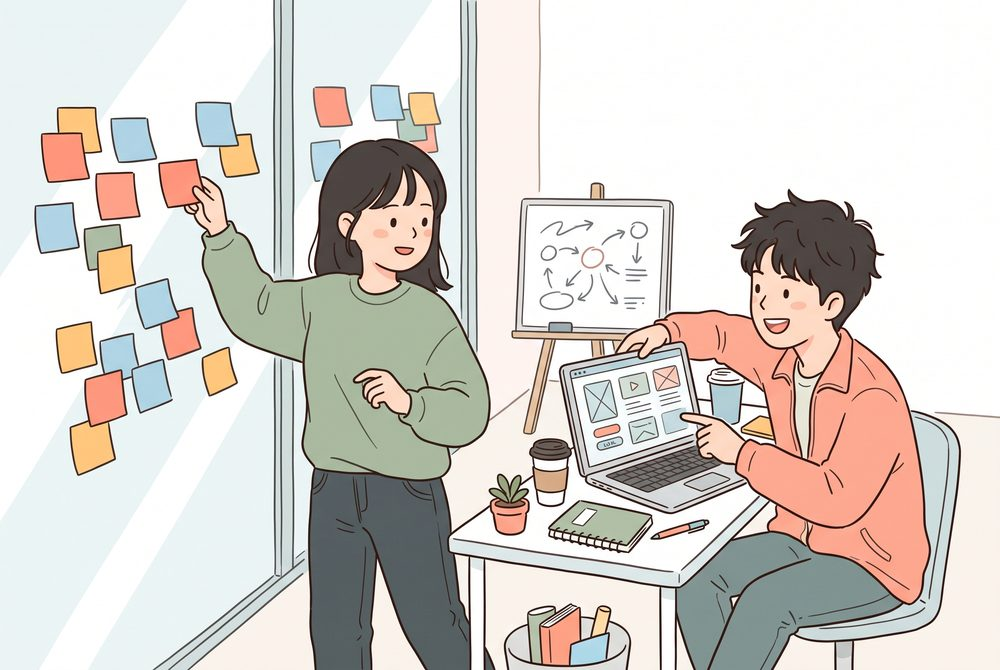

0시작 전 30초
휴대폰 하나면 됩니다. 로그인이 안 되면 옆 분과 같이 보셔도 괜찮아요.
1. 앱 열기챗GPT 앱(무료). 없으면 chatgpt.com, 또는 제미나이·클로드·코파일럿
2. 복사 버튼이 페이지 문장 옆 복사 버튼 → AI 입력창에 길게 눌러 붙여 넣기
3. 노란 글씨만 고치기[ ] 안을 우리 가게 이야기로. 고치기 어려우면 그대로 보내도 OK
4. 말로 해도 OK입력창 옆 마이크 버튼을 누르고 손님에게 설명하듯 말하기
손님 개인정보는 넣지 마세요. 이름·전화번호·주소는 지우고 붙여 넣습니다. 가격·법·세금처럼 중요한 숫자는 AI 답을 한 번 더 확인하세요.
1AI가 나를 인터뷰하게 해서 '우리 가게 한 줄' 만들기
5분 · 포인트는 내가 잘 쓰는 게 아니라 AI가 잘 묻게 하는 것. 답은 짧아도 됩니다.
나는 [마포]에서 [백반집]을 [5년]째 하고 있는 사장이야.
우리 가게를 한 문장으로 소개하는 '우리 가게 한 줄'을 만들고 싶어.
답하기 전에, 좋은 한 줄을 만드는 데 필요한 질문을 나한테 한 번에 하나씩, 5개까지 물어봐 줘.
다 답하면 손님 입장에서 끌리는 한 줄 3개를 만들어 줘.
다 했으면 이어서 이렇게
이 한 줄 중에 [2번]으로 할게. 이걸 네이버 플레이스 소개글 3줄로 늘려 줘. 과장 없이, 우리 가게에 실제로 있는 것만.
결과 예시 (가상 백반집)
- 가성비형: "9천 원에 집밥 한 상, 반찬은 눈치 없이 리필"
- 단골형: "이름을 기억해 주는 마포의 점심 식탁"
- 혼밥형: "1인석이 있는 백반집, 혼자여도 한 상 가득"
2불만 리뷰에 답글 달기
5분 · 사과 → 이유 한 줄 → 다음 약속. 마지막 한 줄은 사장님이 직접.
연습용 리뷰 (가상)
별점 1점 · "포장 주문했는데 국이 새서 가방이 다 젖었어요. 전화도 안 받으시고요."
나는 [마포의 백반집] 사장이야. 아래 리뷰에 답글을 써 줘.
순서: 사과 → 이유 한 줄(변명처럼 들리지 않게) → 다음부터 바꿀 구체적인 약속.
3~4문장, 손님 이름이나 개인정보는 쓰지 마. 말투는 [정중하지만 따뜻하게].
리뷰: "포장 주문했는데 국이 새서 가방이 다 젖었어요. 전화도 안 받으시고요."
한 번 더 고치는 말
- "더 짧게, 두 문장으로"
- "덜 딱딱하게, 동네 사장님 말투로"
- "사과는 한 번만, 약속은 더 구체적으로"
체크리스트
- 사과가 맨 앞에 있나
- 이유가 핑계처럼 들리지 않나
- 약속이 구체적인가 (예: 국 용기에 랩 한 번 더, 봉투 따로)
- 사장님만 쓸 수 있는 한 줄이 들어갔나
리뷰 여러 개를 한 번에 정리하려면
아래는 우리 가게 최근 리뷰야.
1) 손님이 반복해서 칭찬하는 것 3가지
2) 반복되는 불만 3가지
3) 이번 주에 돈 안 들이고 바로 고칠 것 1가지
를 표로 정리해 줘. 리뷰에 없는 내용은 지어내지 마.
[리뷰 붙여 넣기]
연습용 리뷰 8개 받기
3이번 주 홍보 글, 채널별로 한 번에
5분 · 같은 소식을 네이버 플레이스·당근·인스타그램 말투로.
나는 [마포의 백반집] 사장이야. 이번 주에 알릴 소식은 [신메뉴 고등어구이 정식 9,000원, 평일 점심만].
우리 단골은 [근처 30~40대 직장인]이야.
네이버 플레이스 소식, 당근 비즈프로필 소식, 인스타그램 글을 각각 하나씩 써 줘.
과장 없이, 이모지 없이, 각 3~4줄. 마지막에 어떤 사진을 찍어 올리면 좋을지 하나씩 추천해 줘.
사진은 AI 추천 구도로 실제 음식을 찍으세요. AI로 그린 음식 사진은 과장 논란이 생길 수 있습니다. 올리기 전 가격·요일·메뉴 이름을 꼭 확인!
★토크콘서트 · 상황별 AI 솔루션
내 가게와 가장 비슷한 상황 하나를 골라 그대로 따라 해 보세요. 샘플 자료는 모두 가상입니다.

길 건너에 대형 센터가 생겼어. 전략을 짜기 전에 우리 센터에 대해 필요한 걸 나한테 먼저 하나씩 물어봐 줘.
그다음 아래 자료를 바탕으로
1) 경쟁 비교표 2) 우리만의 강점 3가지 3) 대표 회원 3명
4) 체험 수업부터 등록까지 손님이 빠져나가는 지점 3곳을 정리해 줘.
[샘플 자료 붙여 넣기]
이어서 물어볼 말
- "이 강점을 살린 인스타그램 게시물 4주 계획을 짜 줘"
- "체험 수업 당일에 등록률을 올릴 작은 장치 3개만"
- "가격 경쟁 없이 이길 수 있는 한 줄 포지션을 3개 제안해 줘"

나는 이태원에서 20년째 나전칠기를 만드는 장인이야. 내 작품을 외국인 손님 눈으로 소개하고 싶어.
아래 자료를 보고
1) 외국인 손님 유형 2가지를 정리하고
2) 자개 명함 지갑의 상품 설명을 영어와 일본어로 써 줘(손님들이 실제로 물어본 질문에 답이 되게)
3) 내 이야기를 3문장 소개글로 만들어 줘.
[샘플 자료 붙여 넣기]
이어서 물어볼 말
- "Etsy, 자사 쇼핑몰, 인스타그램 판매를 처음 하는 1인 공방 기준으로 비교표로 정리해 줘. 수수료는 공식 안내를 확인하라고 표시해 줘"
- "작업 과정을 찍은 15초 영상 대본, 컷 5개로"
- "십장생 문양의 뜻을 외국인에게 설명하는 카드 문구"

대학가에서 5년째 착한가격 부대찌개집을 해. 첨부한 메뉴별 판매가·원가·판매량과 고정비를 보고
1) 메뉴별 매출, 1개당 이익, 원가율, 총이익을 표로 정리하고
2) 가장 많이 남는 메뉴와 가장 덜 남는 메뉴를 짚어 줘.
3) 1인분 가격 8,000원은 그대로 두고 더 남기는 방법 3가지를 숫자로 비교해 줘.
계산은 표로 보여 주고, 내가 준 숫자 말고는 지어내지 마.
이어서 물어볼 말
- "부대찌개 1인분 + 라면사리 + 음료를 1만 원 세트로 하면 1건당 이익이 얼마나 달라져?"
- "햄 추가 메뉴의 양과 가격을 다시 짜는 안 2개"
- "배달 매출은 수수료를 빼면 실제로 얼마 남는지 따로 계산해 줘"

나는 혼자 여성의류 쇼핑몰을 운영해.
첨부한 고객 문의 30개를 유형별로 묶고, 유형마다 바로 보낼 수 있는 답장 틀을 만들어 줘.
교환·반품 답장에는 '상품을 받은 날부터 7일 안에 신청'이라는 기준을 넣되, 상품 하자는 예외라고 안내해 줘.
이어서 물어볼 말
- "9월 주문 데이터에서 교환·반품이 많은 상품과 이유를 찾아 줘. 상세페이지에 무엇을 추가하면 줄어들까?"
- "상품별 인스타그램 글 3개, 실측 사이즈 안내 포함"
- "주간 매출·반품을 한눈에 보는 표를 만들어 줘(가능하면 그래프도)"

우리 팀 회의 메모야. 이 아이디어에서 우리가 믿고 있는 가정들을 뽑고,
그중 틀리면 사업이 무너지는 가장 약한 가정부터 순서대로 정리해 줘.
앱을 만들기 전에 2주 안에 돈을 거의 안 들이고 검증할 방법도 제안해 줘.
[회의 메모 붙여 넣기]
이어서 물어볼 말
- "검증 결과가 좋으면 예비창업패키지 사업계획서 항목별로 나한테 먼저 질문해 줘"
- "오늘 회의 내용을 할 일·담당·마감 표로 정리해 줘"
- "이 일을 AI 없이 했을 때와 AI로 했을 때 걸리는 시간을 비교해 보자"
+가게에서 더 해 보기
강연에 나온 문장들. 필요한 것만 골라 쓰세요.
우리 손님 세 명의 얼굴 그리기
우리 가게는 [업종·동네]야. 아래 리뷰와 내 설명을 바탕으로 대표 손님 3명을 그려 줘. 언제 오는지, 무엇이 중요한지, 어디서 우리 가게를 알게 되는지 포함해서.
[리뷰나 설명 붙여 넣기]
자주 받는 질문 답장 틀
우리 가게에 손님이 자주 묻는 질문은 [영업시간, 주차, 예약, 포장, 단체석]이야. 카카오 톡채널이나 문자로 바로 보낼 수 있게 질문별 답장 틀을 2~3문장씩 만들어 줘. 우리 가게 정보는 [여기에 적기].
메뉴 설명 한 줄씩
[백반집] 점심 메뉴판 문구를 만들어 줘. 메뉴는 [제육 9,000 / 고등어구이 9,000 / 된장찌개 8,000]. 메뉴마다 한 줄 설명, 과장 없이.
지원사업 서류, 빈칸부터 같이 채우기
나는 [업종] [몇 년] 차 사장이고 [지원사업 이름]에 신청하려고 해.
아래는 신청서 항목이야. 내가 답해야 할 질문을 항목별로 먼저 물어봐 줘.
내 답을 다 들으면, 항목별 초안을 심사위원이 읽기 쉽게 써 줘.
내가 말하지 않은 숫자나 실적은 절대 만들지 마.
[신청서 항목 붙여 넣기]
내 노하우로 우리 가게 매뉴얼 만들기
나는 [업종] 사장이야. 내가 손님 응대할 때 지키는 원칙을 매뉴얼로 만들고 싶어. 나를 인터뷰해서 하나씩 끌어내 줘. 다 되면 새 직원이 첫날 읽을 수 있는 1쪽짜리로 정리해 줘.
말로 만드는 우리 가게 계산기 (바이브코딩)
메뉴 이름, 판매가, 1개당 원가, 하루 판매량을 넣으면 메뉴별 이익과 원가율, 하루 총이익을 계산해 주는 간단한 웹페이지를 만들어 줘. 휴대폰에서도 쓰기 쉽게, 버튼 크게.
완성 예시: 메뉴 이익 계산기 열어 보기
✓오늘 저녁 가게에서 체크
지원사업, 아는 사장님이 씁니다
- 소상공인24: 중기부 소상공인 지원사업 신청 창구 (sbiz24.kr)
- 기업마당: 정부 지원사업 공고 모음 (bizinfo.go.kr)
- 서울신용보증재단: 소상공인 아카데미·컨설팅 안내 (seoulshinbo.co.kr)